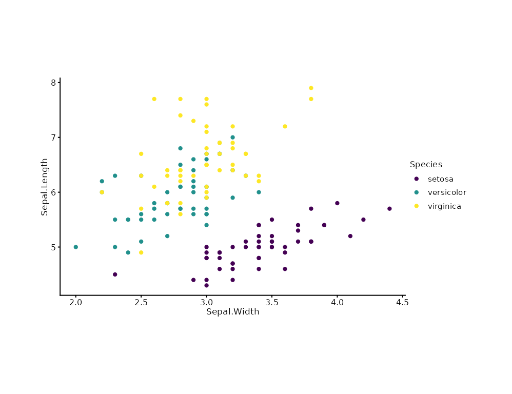

Maps data values to colours. Auto-detects discrete vs continuous variables; supports manual colour vectors and named colour schemes.
Usage
scale_color(
plot,
name = ggplot2::waiver(),
trans = NULL,
limits = NULL,
range = NULL,
breaks = NULL,
labels = NULL,
...
)Arguments
- plot
A plotit object.
- name
Scale title (legend name).
ggplot2::waiver()= use variable name.- trans
Scale transformation.
NULLauto-detects, otherwise one of:"identity","discrete","reverse","binned". Unsupported values (e.g."log") produce a targeted error message.- limits
Data domain.
c(min, max)for continuous; character vector for discrete limits.- range
Output range.
NULL= auto (discrete->friendly, continuous->viridis). A colour vector (c("blue","red")) for manual colours, or a scheme name:"viridis","brewer","grey","friendly","hue". For binned: only"viridis","brewer". For continuous: only"viridis","brewer".- breaks
Legend key positions.
- labels
Legend key labels.
- ...
Passed to the underlying ggplot2 scale function.
Examples
plotit(iris, encode(x = Sepal.Width, y = Sepal.Length, colour = Species)) |>
mark_point() |>
scale_color(range = "viridis")
#> Scale for colour is already present.
#> Adding another scale for colour, which will replace the existing scale.
